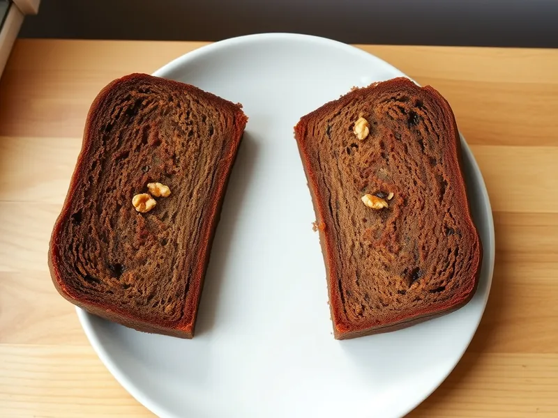

Банановый хлеб (кекс с бананами)
Влажный кекс в форме из очень спелых бананов с грецкими орехами
100 мин10 порц.248 ккал на порциюБ 4 · Ж 10 · У 35Американская кухня
Открыть в приложении: порции, таймеры, список покупок
Продукты на 10 порц.
- Бананы3 шт
- Мука пшеничная220 г
- Сахар120 г
- Яйцо куриное2 шт
- Сливочное масло100 г
- Сода1 ч. л.
- Соль2 щеп.
- Корица0,5 ч. л.
- Грецкие орехи по желанию1 горсть
Как готовить
- Разогрейте духовку до 180 °C (средний жар). Застелите форму для кекса 25 см бумагой.
- Разомните очищенные бананы вилкой в пюре: чем темнее кожура, тем слаще кекс.
- Добавьте растопленное сливочное масло, сахар и яйца и перемешайте.
- Всыпьте муку, соду, соль и корицу и перемешайте лопаткой только до исчезновения сухой муки. Вмешайте порубленные орехи.
- Выложите тесто в форму и выпекайте 50-60 минут до сухой шпажки. Если верх быстро темнеет, через 35 минут накройте его фольгой.
- Остудите в форме 15 минут, затем полностью на решётке.
Совет. Берите бананы с тёмными пятнами на кожуре: из жёлтых без пятен кекс выходит суше и пресным.